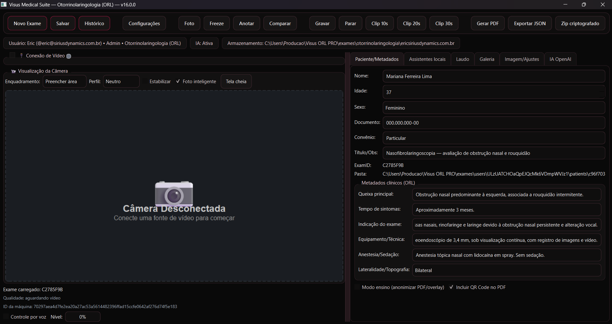

Organize o paciente
Localize ou cadastre o paciente e mantenha exames, retornos e documentos vinculados à sua história.
Da captura ao laudo.
Tudo conectado ao paciente.
Uma plataforma desktop para profissionais e clínicas que precisam documentar exames com imagens e vídeos, organizar o histórico e produzir laudos com mais fluidez e rastreabilidade.
 Versão 16.0.0
Versão 16.0.0O Visus reúne cadastro, procedimento, mídia clínica, laudo e histórico no mesmo ambiente. O profissional mantém o foco no atendimento enquanto o sistema preserva a relação entre cada imagem, informação e documento do exame.
Localize ou cadastre o paciente e mantenha exames, retornos e documentos vinculados à sua história.
Conecte câmera USB ou fonte HTTP, registre fotos, vídeos e clipes e preserve cada mídia dentro do exame correto.
Use formulários adaptados à especialidade, anotações em imagem e comparação com exames anteriores do mesmo paciente.
Conclua o laudo, gere PDF e exporte dados ou um pacote criptografado conforme a necessidade da operação.
A interface aproxima câmera, dados do paciente, metadados clínicos, galeria, laudo e recursos de apoio. O resultado é uma operação mais coerente e um registro mais completo do exame.

Recupere exames, imagens, conclusões e retornos sem perder a relação entre os registros.
Reduza a alternância entre ferramentas ao concentrar captura, documentação e entrega em uma plataforma.
Validações locais ajudam a identificar campos ausentes, inconsistências e problemas técnicos de imagem.
Arquitetura local-first, isolamento por usuário, auditoria e verificações de integridade apoiam a gestão responsável.
Campos, seções, validações e modelos de laudo se adaptam ao contexto selecionado.
O Visus oferece ferramentas locais para revisão, qualidade de imagem, resumo longitudinal e auditoria técnica. Recursos externos de IA podem ser configurados com consentimento e minimização de dados.
As sugestões não realizam diagnóstico, não assinam laudos e não substituem a revisão nem a responsabilidade do profissional habilitado.
A Sirius Dynamics Technology integra, na modalidade não residente, o programa da Incubadora Tecnológica do Instituto de Tecnologia do Paraná — Intec/Tecpar. A proposta do Nexus V foi selecionada por seu caráter inovador e potencial de impacto social.
O ambiente de incubação conecta o desenvolvimento a orientação técnica, infraestrutura e serviços especializados que apoiam prototipagem, ensaios, planejamento tecnológico e evolução do produto.
Incubação é um programa de apoio ao desenvolvimento tecnológico; não representa certificação ou aprovação regulatória do produto.O manual reúne requisitos funcionais, segurança, privacidade, captura de vídeo, assistentes, exportações, armazenamento e boas práticas de operação.
Baixar manual técnico — PDF ↓Manual técnico e operacional — Visus Medical Suite Nexus V, versão 16.0.0. A conformidade institucional depende de políticas, bases legais, perfis de acesso e procedimentos definidos pela organização.